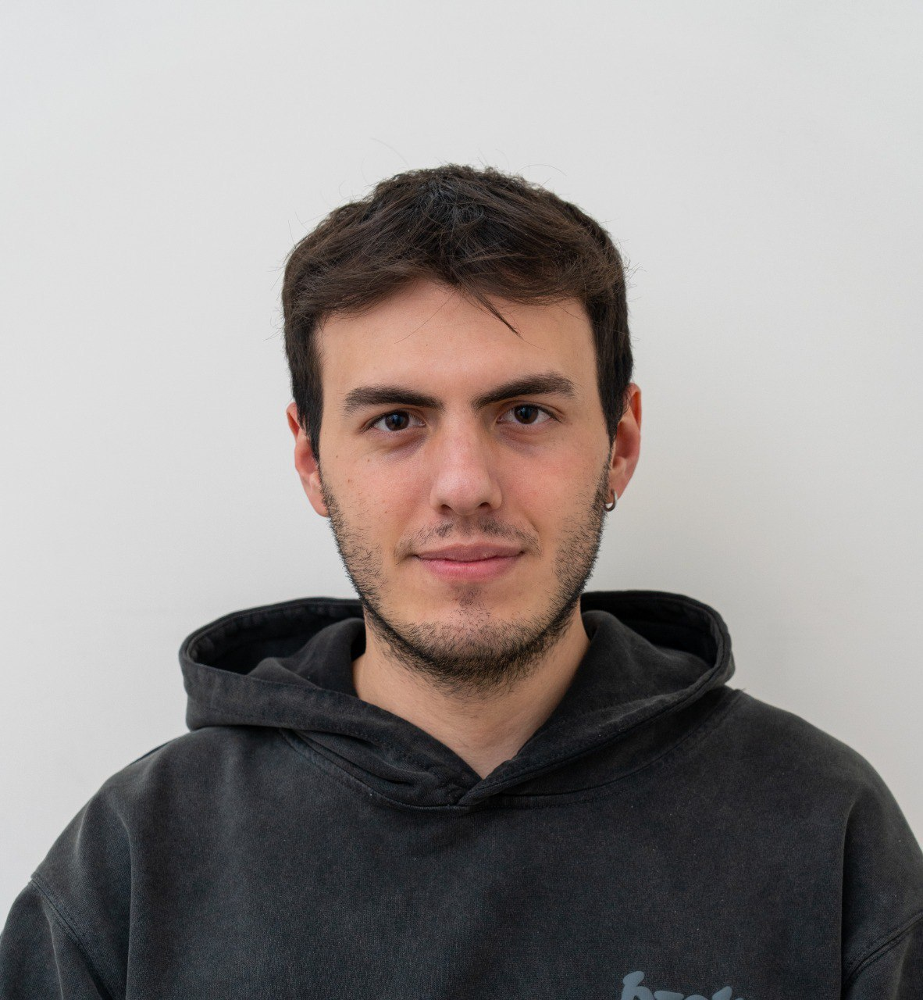

Doctoral research
Green Lung
I am designing a controlled-light experiment to compare C3 and CAM plants. I mapped the LED spectra and measured photosynthetic photon flux density at the plant support surface as part of the experimental setup.
PhD in Biology · University of Naples Federico II
I study how plants respond to changes in light and gravity. My work brings together plant photophysiology, astrobiology and field experience in the Arctic.
Explore my research ↓
Doctoral research
I am designing a controlled-light experiment to compare C3 and CAM plants. I mapped the LED spectra and measured photosynthetic photon flux density at the plant support surface as part of the experimental setup.
Master’s thesis
My thesis investigates how light and gravity shape plant responses, with a focus on gravitropism, phototropism and Photosystem II. The approach combines biochemical measurements, imaging and chlorophyll fluorescence.
Supervisor · Prof. Carmen Arena
Longyearbyen, Norway · 2025
At the University Centre in Svalbard (UNIS), I took the Arctic Marine Molecular Ecology field course. The programme covered Arctic marine microbial diversity and molecular approaches to studying communities in polar environments.
View field photographs ↓A rule-based tool for interpreting plant stress indicators such as chlorophyll fluorescence, pigment content and SPAD readings.
Source code ↗ · Open app ↗A lab notebook for recording experimental work in plain language and following the history of samples and experiments.
Open lab notebook ↗Education, research experience and scientific output.
(In press, 2026) Growth inhibition and altered phenology in woody species exposed to urban air pollution. Book chapter in Morpho-anatomical and physiological responses of woody species to urban air pollution, Elsevier.
Author of sections 2.1 (Growth inhibition), 2.2.1 (Altered plant shape), 2.2.2 (Altered reproduction capacity) and 2.2.3 (Suspended flowering and fruiting).
2025 – Winner, BIP "Power of Nature", InHolland University of Applied Sciences.
Biology · Laboratory techniques · Molecular and spectroscopic analysis · Environmental simulation systems · Plant physiology · Fieldwork in extreme and polar environments · Imaging and data analysis
Languages — Italian (native), English (C1), Spanish (B1).
Photographs from Svalbard.
Feel free to reach out for collaborations, projects or ideas.